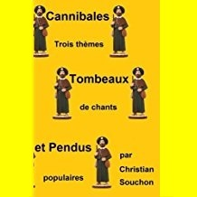

Melezourioù Arc'hant
|
des chants de "tombeaux indignes" étudiés dans CANNIBALES, TOMBEAUX ET PENDUS un essai au format LIVRE DE POCHE  de Christian Souchon |
"indecorous grave songs" presented, in French, in CANNIBALES, TOMBEAUX ET PENDUS (Cannibals, graves and gallows) as a PAPERBACK BOOK by Christian Souchon |
Cliquer sur le lien ou l'image - Click link or picture for more info
|
1. Selaouit holl, o, selaouit, o ge!
Selaouit holl, o, selaouit! Ur zonig nevez zo savet, Tira la la tira la la (div w.) 2. Da Varc'haid a Gerglujar, Bravañ plac'h a oa war an douar. 3. Hag he mamm a lare dezhi - Marc'haid kaer, koantig oc'h-c'hwi!. 4. - Da betra vern din bout ken brav, Pa n'am zimezit ket atav? 5. Pa vez deut an avalenn ruz, Red eo he gutuilh diouzh-tu. 6. Pa gouezh diouzh ar we'enn an aval Ma n'hen gutuilher, ya da fall. 7. - Va merc'hig, en em gonfortit! A-benn ur bloaz e ve(fe)c'h dimeet! |
8. - Ha mar varvan araok ur ble (bloaz)?...
C'hwi 'po glac'har vras goude-se! 9. Mar varvan araok ur ble, Va lakait en ur bez nevez! 10. Lakait tri bouked war va bez, Unan a roz, daou a lore! 11. Pa zeuy ar c'hloer eus ar vered, E kemerint pep a vouked. 12. Hag e larint 'n eil d'egile: - Setu ur plac'h yaouank ame (amañ) 13. Hag a zo marv en he c'hoant Da zougen mele'ourioù arc'hant! [1] [2]- 14. War an hent bras kent me lakait. Kloc'h evidon na zono ket! 15. Kloc'h war an douar na zono ket! Beleg d'am c'herc'hat na zeuy ket! - |
NOTES
|
[1] La Villemarqué traduit la strophe 13: "Qui est morte du désir de porter les miroirs d'argent".
Luzel donne, - une fois n'est pas coutume -, exactement le même texte (en vannetais correct, contrairement à celui du Barzhaz), collecté à Stival, près de Pontivy, en 1848, Dans ses "Sonioù", (T. I, pp. 220-222) il traduit le même passage dans un français approximatif: "Laquelle est morte au beau milieu de son envie de porter des miroirs d'argent". [2] Dans une note, Luzel confirme l'existence d'une coutume que, sinon, seul le Barzhaz mentionne, à partir de 1867 seulement: "Les nouvelles mariées, le jour de leurs noces, portaient des petits miroirs d’argent sur leur coiffure." Dans les nombreuses variantes qui parlent de miroir (pas toutes), il s'agit d'un cadeau offert par un "galant". C'est en se contemplant dans ledit miroir que la jolie jeune fille contracte son irrépressible envie d'être mariée |
[1] La Villemarqué translates stanza 13: "Who died of the desire to wear silver mirrors".
Luzel gives - for once - exactly the same text (in correct Vannes dialect, unlike that of Barzhaz), collected at Stival, near Pontivy, in 1848, In his "Sonioù", (T. I , pp. 220-222) he translates the same passage into broken French: "Who died in the midst of her desire to wear silver mirrors". [2] In a note, Luzel confirms the existence of a custom that otherwise only the Barzhaz mentions, as from 1867 only: "New brides, on their wedding day, wore little silver mirrors on their headdresses." In the many variants featuring a mirror (not all of them), it is a gift offered by a "suitor". It is by contemplating herself in the said mirror that the pretty young girl contracts her irrepressible desire to be married. |
"Melezourioù arc'hant" kempennet gant Laura W. Taylor (1865)